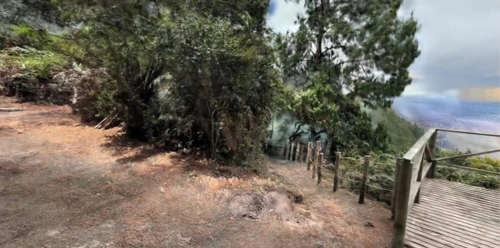

Sendero Vivo
Naturaleza que nos conecta

Naturaleza que nos conecta
Las fuentes oficiales no publican distancia, duración ni desnivel de este sendero.
Toca los hitos numerados para conocer detalles y recomendaciones
Toca cada ítem cuando lo tengas listo
Guía ilustrada de campo · Sendero Santa Ana
Biodiversidad registrada · Cerros Orientales
W A S D caminar · Q E bajar y subir · Shift más rápido · arrastrar para mirar · rueda para acercar